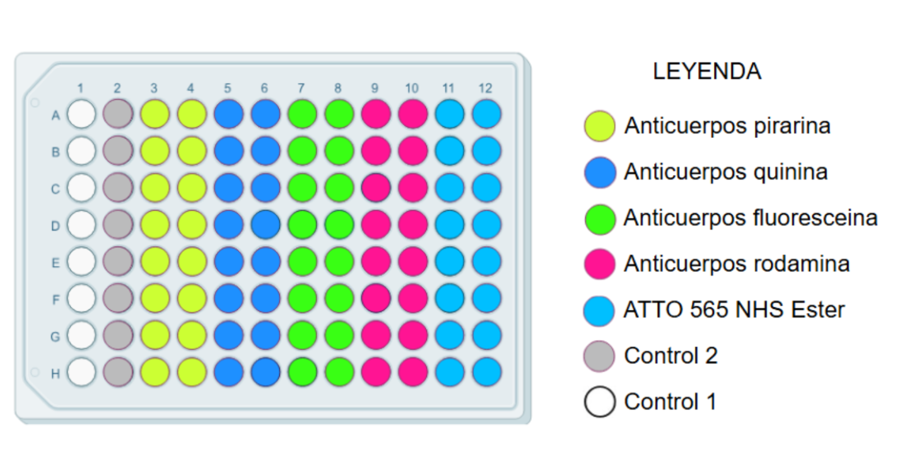

NeuroMetrix™ — un mañana con memoria
Kit proteómico multiplexado para la evaluación temprana del riesgo de deterioro cognitivo.
NeuroMetrix™ Early Risk Panel
Panel proteómico multiplexado para la evaluación del riesgo biológico de deterioro cognitivo tipo Alzheimer.
| Biomarcador | Molécula fluorescente |
|---|---|
| Clusterina | Rodamina |
| Complemento C3 | ATTO 565 NHS Ester |
| IGFBP2 | Piranina |
| GDF15 | Quinina |
| Haptoglobina | Fluoresceína |
Uso sencillo
Preparación fácil e intuitiva del kit.
Muestra de Plasma
Protocolo mínimamente invasivo (sangre periférica).
Resultados rápidos
El tiempo de detección es de unos escasos 5 minutos.
Tecnología y evidencia
Basado en tecnología Bio-Plex/Luminex que combina principios ELISA con micropartículas fluorescentes. Nuestro enfoque permite cuantificar múltiples proteínas en una sola muestra y derivar un índice integrador de riesgo.
Biomarcadores incluidos
- Clusterina
- Complemento C3
- IGFBP2
- GDF15
- Haptoglobina
Ventajas clínicas
- Permite una ventana de intervención temprana
- Ideal para estudios poblacionales y seguimiento longitudinal
- Reduce costes frente a PET o punción lumbar
Visualización del panel
Distribución de anticuerpos y controles en la placa multiplexada utilizada en el kit NeuroMetrix™.
Equipo fundador
Equipo multidisciplinar con experiencia en investigación biomédica y biotecnológica.
Paula Gordillo Díaz
Dirección técnicaGraduada en Biología y Máster en Biotecnología Avanzada (UEx).
Marcial Valle Lagar
Desarrollo de software y análisis de datosGraduado en Biología y Máster (UEx).
Alba Arias Sánchez
Comunicación científicaGraduada en Biología (UEx).
Pablo Fernández Crespo
Diseño experimental y validaciónGraduado en Biología (UEx).
Contacto
¿Interesado en colaboración, validación o compras institucionales? Contáctanos.
📍 Oficina
Polígono Industrial El Nevero, Badajoz
🔗 Redes
LinkedIn: BioSense Neurologics
📄 Documentación
Plan de negocio y dossier técnico disponibles a petición.
Encuesta de valoración de clientes
Esta encuesta tiene como objetivo recoger la opinión de profesionales que han evaluado el kit NeuroMetrix™ Early Risk Panel. Las respuestas son anónimas y se utilizarán exclusivamente con fines de mejora del producto.